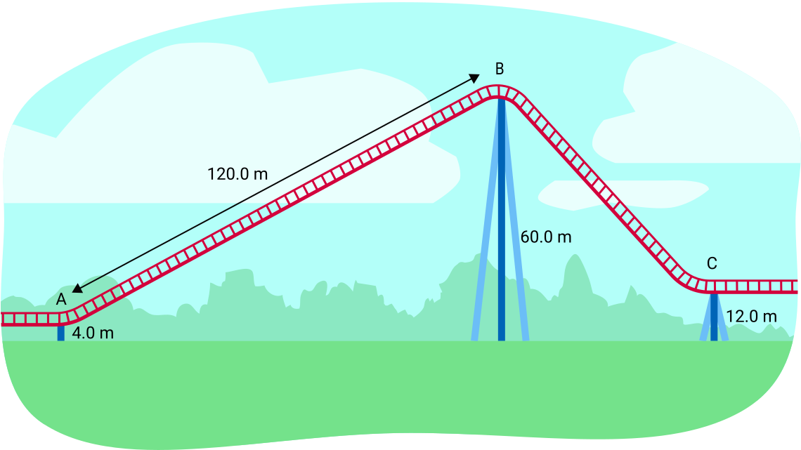

물체를 12.8 m 이동시키면서 855 J의 일(work)을 했습니다. 변위 방향으로 물체에 얼마의 힘이 가해졌습니까? (3점)
105 N의 힘이 물체에 가해져 2700 J의 일을 수행했습니다. 힘의 방향으로 물체의 변위(displacement)는 얼마였습니까? (3점)
움직이는 물체가 37.5 m [앞으로] 이동하는 동안 18.0 N [뒤로]의 마찰력(friction)이 가해졌습니다. 마찰에 의해 수행된 일은 얼마입니까? (3점)
크레인이 180초 동안 컨테이너를 20.0 m 들어 올립니다. 크레인이 200.0 N의 힘을 가했다면, 사용한 일률(power)은 얼마입니까? (4점)
직장에서 8명의 직원이 일률 정격 20.0 W의 노트북 컴퓨터를 사용합니다. 매달 컴퓨터 사용 시간을 설명과 함께 추정하고, 한 달 동안 컴퓨터가 사용하는 에너지(energy)를 줄 단위로 구하세요. (7점)
EnerGuide 등급이 연간 481.0 kWh인 식기세척기를 운영하는 연간 비용을 계산하세요. 전기 요금은 kWh당 9.800센트입니다. (4점)
1,844 kg의 자동차가 36.0 km/h의 속도로 28.0 m 높이의 언덕을 올라갈 때 중력 퍼텐셜 에너지(gravitational potential energy)의 변화를 계산하세요. (4점)
120.0 g의 연이 중력 퍼텐셜 에너지를 38.9 J 얻었을 때 높이 변화를 계산하세요. (4점)
4.43 m/s로 떨어지는 0.340 kg 책의 운동 에너지(kinetic energy)를 계산하세요. (4점)
49.6 g의 달걀이 3.27 J의 운동 에너지를 가지고 있다면, 달걀의 속도는 얼마입니까?
롤러코스터 트랙의 시작점(A 지점)에서, 질량 217.5 kg의 카트가 지면 위 4.00 m 높이에 정지해 있습니다. 1140 N [위쪽]의 힘으로 경사로를 따라 당겨 올려집니다. 경사로 트랙의 길이는 120.0 m이며 지면 위 60.0 m 높이(B 지점)에서 끝납니다. 그런 다음 카트는 언덕을 내려가 지면 위 12.0 m 높이의 지점(C 지점)에 도달합니다.

카트를 경사로 꼭대기까지 가져가는 데 수행된 일은 얼마입니까? (4점)
모든 에너지가 보존된다고 가정할 때(마찰에 의한 손실 없음), B 지점에서의 속도는 얼마입니까? (7점)
C 지점을 향해 경사로를 내려가는 도중, 카트의 속도가 31.0 m/s일 때 지면 위 높이는 얼마입니까? (6점)
엘리베이터가 40,800 J의 에너지를 사용하여 100.0 kg의 블록을 35.00 m 들어 올립니다. 엘리베이터의 효율(efficiency)은 몇 퍼센트입니까? 남은 에너지는 어디로 갔습니까? (7점)
처음에 95.0°C인 0.300 kg의 구리 블록(c=390.0 J/kg°C)을 20.0°C인 0.355 kg의 물(c=4,200 J/kg°C)에 담급니다. 주변으로의 열 손실이 없다고 가정하고, 구리와 물의 최종 온도를 구하세요. (7점)
실험에서, 처음에 42.0°C인 0.100 kg의 미지 물질 블록을 20.0°C인 0.100 kg의 물(c=4,200 J/kg°C)에 담급니다. 물질과 물의 최종 온도가 21.8°C라면, 미지 물질의 비열 용량(specific heat capacity)은 얼마입니까? (6점)
처음에 20.0°C인 3.00 kg의 물을 가열합니다. 물이 끓어서 0.37 kg의 수증기(steam)가 생성되었다면, 물에 추가된 열은 얼마입니까? 필요한 상수는 학습 활동 3.4를 참조하세요. (6점)
백금-199(platinum-199)의 베타-음 붕괴(beta-negative decay) 방정식을 쓰세요. (3점)
텅스텐-163(tungsten-163)이 베타-양 붕괴(beta-positive decay)를 겪을 때 1.059×10−12 J의 에너지가 방출됩니다. 이 반응의 질량 결손(mass defect)은 얼마입니까? (4점)
다음 질문에 답하기 위해 조사를 수행하세요. 외부 출처를 사용하는 경우 APA 형식으로 인용하세요.
전기 자동차를 운행할 때 관련된 에너지 변환(energy transformations)을 설명하세요. (5점)
약 두 문단으로, 전기 자동차가 환경과 사회에 미치는 영향을 설명하세요. 부정적인 영향 중 하나를 줄이는 방법을 제안하세요. (5점)